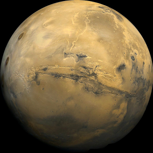

|
Department: Physics and Astronomy Instructor: Dr. Jason Pinkney Office hours: in 111 Science Annex at these times . Email: j-pinkney@onu.edu or call 419-772-2740. Instructor's Home page: http://www2.onu.edu/~j-pinkney/ Class time and place: MWRF, 1:00-1:50 am, Meyer 113 |
 |
Text: Astronomy
Today, 6/E, (6th Edition) by Chaisson and
McMillan.
OR: Astronomy
Today Vol 1: The Solar System, 6/E by Chaisson and McMillan.
This course is an introduction to astronomy. Astronomy has so many subfields that it is impossible to cover them all in one quarter. Hence, this course deals with the solar system and leaves out a great deal of material on the stars, galaxies and cosmology. We begin with the history of our understanding of the naked eye universe. We then look in detail at the solar system: planets, their myriad moons, asteroids and comets. We now have data on numerous extrasolar planets (planets around other stars) which challenge our theories of solar system evolution.
There are two major themes. First, we ask "how do we know what we know?" Not only is it good to be skeptical, but the story of how we know a fact is sometimes more interesting that the fact itself. Second, we learn by comparison. The term "comparitive planetology" is often used to describe how we can verify our hypotheses about the Earth by comparing it to the other planets (especially Venus and Mars). Similarly, we are now refining our overall view of planetary systems by comparing to extrasolar systems.I plan on taking you out to use telescopes and look at the sky. Mars and Saturn are well placed for viewing during this spring quarter. Try to ``keep an eye on the sky" during this course and bring your questions and news items to class.
-------------------------------------------
(Watch this spot for
new
links, solutions,
etc.)
This is a nice link about solving word problems.
Week 2 Ch 1 R&D Questions (homework).
Practice questions, including questions on Jovians.
-------------------------------------------
A tentative calendar of topics is outlined below.
| Week of | Topic | Chapter(s) | Graded material (not complete) |
| 3/3 | Syllabus. Survey of Universe. | 1 | quiz1 |
| 3/10 |
Naked Eye Universe - the celestial sphere | 1 | quiz2 |
| 3/17 |
History of Cosmology (short week) | 2 | Exam I |
| 3/21-24 | Easter Recess | ||
| 3/26 |
Solar System Overview, Earth (short week) |
6, 7 |
quiz3 |
| 3/31 |
Moon, Mercury, Venus | 8,9 |
quiz4 |
| Note: Pinkney gone on Thurs 4/3/08. Worksheet? | |||
| 4/7 |
Venus, Mars | 9,10 |
quiz5 |
| 4/14 |
Jupiter, Saturn | 11,12 | Exam II. |
| 4/21 |
Saturn, Uranus and Neptune | 12,13 | quiz6 |
| 4/28 |
Pluto and Solar System Debris | 13, 14 | quiz7 |
| 5/8 |
Formation of Planetary Systems | 15 | quiz8 |
| 5/16 Fri |
Final at 10:30-12:30 AM, Meyer 113. | _ | Comprehensive Final exam. |
| In-class | Homework, activities, participation | 25% |
| Quizzes | Quizzes (drop lowest grade) | 25% |
| Exams | There will be two exams and a final. | 50% |
| Total | 100% |
Your final letter grade is assigned roughly as follows:
|
<55
|
55-70
|
70-80
|
80-90
|
90-100
|
|
|
|
|
|
|
I will not to grade any "harder" than the above. However, if
the
class
mean drops below 75, I will grade more leniently.
Attendance is important for doing well in this course. Absenteeism can directly lower your grade if you miss a quiz or a homework discussion. Let me know in advance (e-mail is good) if you plan to miss for a valid reason (e.g. your team is on the road, you are sick, you have a family emergency). If you miss a quiz or exam because of an emergency, let me know as soon as possible, and provide proof of the emergency.
Homework will consist mainly of reading and preparing to discuss review questions from the textbook. You may also try your hand at working problems from the textbook. Math ability (or lack thereof) will not have a great influence on graded material, but you should try to improve your problem solving skills during this course. Homework will not be accepted after it has been graded. If you foresee yourself missing a deadline because of an excusable absence, again, let me know ahead of time. Written assignments will be scored to varying degrees on completeness and correctness, but not every problem will be corrected. I encourage you to discuss homework with your classmates.
Quizzes will be given on non-exam weeks. They will consist of about 10 multiple choice/short answer questions. They cover the assigned reading and especially the material discussed in class. You can only make up a quiz that was missed because of a valid conflict or emergency. Also, you can only make up the quiz before the answers are revealed (usually the next period). For this reason, I will drop your lowest quiz score.
Exams will be given roughly every 3 weeks. These will weigh most heavily towards your class grade. The final exam will be comprehensive, but will emphasize the last 2-3 weeks of material.
Disruptions. You can ask questions during class and even laugh like a donkey when I tell a joke, but don't interfere with the learning of the students around you. Class begins at 1:00 PM. Don't be late or you may face public humiliation. You might also miss a quiz. In general, do not disrupt the class or you may be asked to leave.
Cheating will not be tolerated. During tests, do not use outside references like laptops, calculators, or notes UNLESS I explicitly allow them. Do not look at another person's quiz or exam while you are taking one. Also, if you suspect someone is copying your answers, try to prevent it by moving or shielding your answers. The penalty for cheating is a zero score for the quiz or exam.
Calculators. I encourage you to use a calculator in this class. A simple calculator will suffice.
Tutoring is available. You are welcome to
drop by during my
office
hours, or you can try to make an appointment. I will look for a
previous
astronomy student to provide tutoring. Stay tuned. You can
also
try
the tutors provided by A&S, although they may not have
astronomy
experience,
they can probably do any math problem in this class. Science tutoring
sessions usually occur on Thursday evenings, starting at 7:00 PM.
The lab for this class is
Physics 255. Please sign up for this lab
during the first week if you are an astronomy minor. Otherwise, you
do not need the lab. Tentative meeting time is Tuesday, 7 PM. We will
meet on the second week of class.
| Cool Astro Links | Pinkney's Homepage | The ONU Physics Homepage |